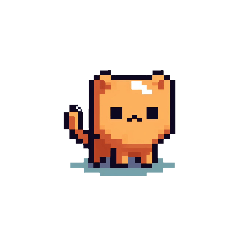

Hai Mailan! 👋
Selamat datang di game Miu! 🐱
Yuk, bermain bersama Miu!
KUMPULAN MINI-GAME ORIGINAL
Empat petualangan seru bersama Miu si kucing oren!
Pilih permainan. Kontrol utama: A D bergerak, W/SPACE lompat.
Jelajahi Kebun Awan, kumpulkan ikan, dan kalahkan Si Landak.
Lari tanpa henti, lompat rintangan, dan kejar rekor terjauh.
Tangkap ikan jatuh sebelum waktu habis. Hindari barang bekas!
Melompat makin tinggi dari platform ke platform di langit biru.
Adventure: Keyboard A/D atau panah untuk bergerak, W/atas/Spasi lompat, Shift lari. Di HP/tablet gunakan tombol ◀ ▶, LARI, dan LOMPAT.
Endless Run: Keyboard Spasi/W/atas, atau tekan tombol LOMPAT. Anda juga bisa mengetuk area permainan untuk melompat.
Catch Fish: Keyboard A/D atau panah kiri/kanan, atau tahan tombol ◀ ▶ di layar.
Sky Jump: Keyboard A/D atau panah kiri/kanan, atau tahan tombol ◀ ▶ di layar. Miu melompat otomatis saat mendarat.
Rekor tersimpan di browser perangkat ini.